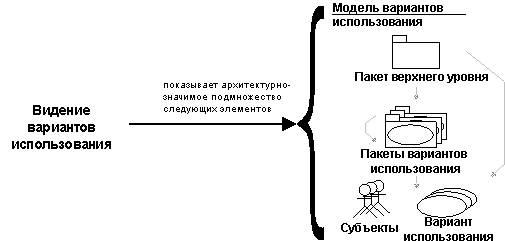

| Концепция: Представление вариантов использования |
 |
|
| Связанные элементы |
|---|
|
Как основа для планирования технического наполнения итераций создается архитектурное представление, называемое представлением вариантов использования. Оно входит в дисциплину требований. Для системы существует только одно представление вариантов использования, которое охватывает варианты использования и сценарии, представляющие архитектурно значимые функции, классы или технические риски. Представление вариантов использования уточняется и пересматривается в начале каждой итерации.  Представление вариантов использования иллюстрирует архитектурно значимое подмножество модели вариантов использования, подмножество вариантов использования и субъектов. Анализ, проектирование и реализация, выполняемые после формирования требований, опираются на центральное понятие архитектуры. Создание и проверка такой архитектуры - это главная цель ранних итераций, особенно на этапе уточнения. Архитектура отображается в ряде представлений архитектуры, которые по сути являются абстракциями архитектурно значимых элементов модели. Есть четыре дополнительных представления: логическое представление, представление процесса, представление развертывания и представление реализации. Эти представления используются в дисциплинах Анализ и проектирование и Реализация. Архитектурные представления описываются в документе архитектуры программного обеспечения. Для отражения других аспектов архитектуры программного обеспечения можно добавлять другие представления, например, представление защиты. Можно сказать, что архитектурные представления являются абстракциями или упрощениями выстраиваемых моделей, в которых выделяются какие-либо важные особенности. Архитектура - это важное средство улучшения качества моделей, создаваемых в ходе разработки системы. |
© Copyright IBM Corp. 1987, 2006. Все права защищены.. |